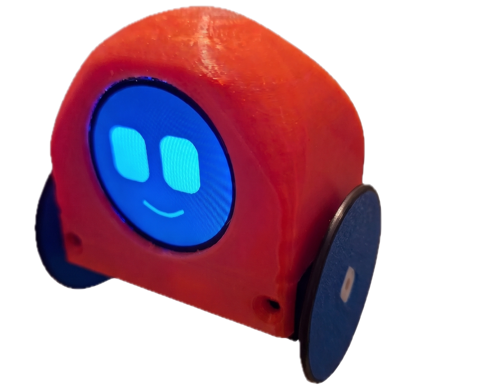

Robo-Buddy flashen
Firmware direkt aus dem Browser auf den Roboter spielen — ohne Installation, ohne Entwicklungsumgebung.
So geht's
- Roboter mit einem USB-C-Datenkabel an den Rechner stecken. Reine Ladekabel funktionieren nicht.
- Auf Verbinden klicken und in der Liste den Anschluss des Roboters auswählen.
- Install wählen und warten. Das dauert etwa eine Minute.
https://
geöffnet sein.
Danach
Der Roboter startet neu und zeigt auf dem Display zwei QR-Codes nacheinander:
- Den ersten mit der Handykamera scannen — das Handy tritt dem WLAN des Roboters bei.
- Sobald das geklappt hat, zeigt das Display den zweiten Code. Der führt zur Steuerseite.
Es wird kein Router und kein Internet gebraucht: Der Roboter macht sein eigenes WLAN auf.
Beim ersten Mal: Wähle „Erase device“ mit aus. Damit werden auch alte Einstellungen wie ein gespeichertes Gesicht gelöscht, und der Roboter startet wirklich sauber.